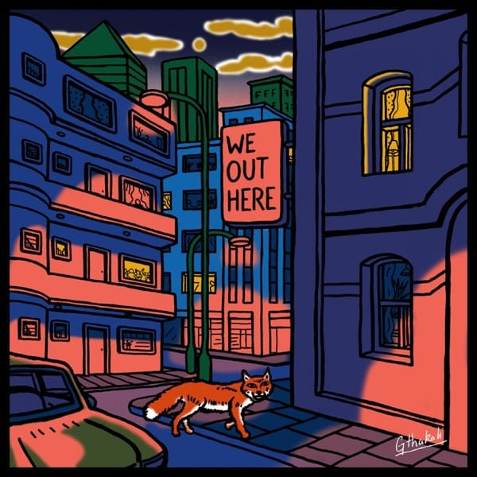
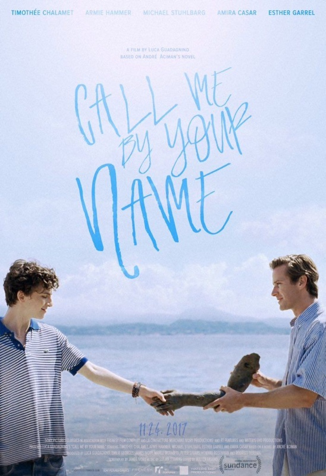

Dead Cells

Dead Cells — кайф!
Раскрою чутка:
- Графика и анимация — кайф
- Музыка — кайф
- Геймплей — кайф
Совершенно не ожидал и от этого особенно приятно, так что — рекомендую.
Dead Cells — кайф!
Раскрою чутка:
Совершенно не ожидал и от этого особенно приятно, так что — рекомендую.

Отлично работается под него.
В 2019-м я научился слушать подкасты.
Но не как в 2018-м, когда я накачал всего и отовсюду, слушал непрерывно месяца полтора и передознулся так, что некоторое время ничего не мог слушать вовсе. В этот раз я начинал очень аккуратно, решил подписываться только на то, что очень нравится и слушать изредка. В итоге, в концу года у меня на постоянной основе всего четыре подкаста, зато очень крутых:
Пис.
В порядке убывания:
Такие дела.

Впрочем, ЦИК успел отчитаться, что все подписи Кульнева недействительные, так как на всех подписных листах не указаны даты рождения сборщиков.
Я помню, как получал свой ИНН в налоговой много лет назад. Для этого надо было придти туда в определенное время и написать заявление на стандартном бланке, который там же и выдавали, после чего стать обладателем заветной бумажки, отсутствие которой могло привести к каким-то проблемам с бухгалтерией на работе.
Я пришел, заполнил, после чего обратил внимание на объявление на стене о том, что бланк нужно заполнять ПЕЧАТНЫМИ БУКВАМИ.
Внутренне поник, но затем прочитал другое объявление, размещенное прямо под первым, в котором сообщалось о том, что в связи с органиченным количеством бланков, формы, заполненные прописью, переписывать не нужно, а можно сдавать как есть.
И выдохнул.
О чем это я? Ах, да, о том, что могут, когда захотят.
А если не хотят, то всегда могут найти какую-нибудь нелепую формальность.

А как кайфово чуваки ебашат!

Очень приятное и легкое кино.

А какой у них крутой третий сезон получился! Кайф!
Эта заметка будет интересна только владельцам айфонов.

Хочу рассказать об одной офигенской фиче плеера для подкастов Castro — Sideloads. По-русски ее можно перевести что-то типа "сторонний контент", а смысл ее в том, что в папку iCloud Drive'а можно загрузить свой аудио файл и слушать его в плеере, как и обычный эпизод подкаста, включая всякие плюшки вроде ускоренного проигрывания и вырезания долгих пауз. Аудио книги я не слушаю, поэтому долгое время я эту фичу игнорировал, ибо стороннего контента у меня не наблюдалось. Но тут совершенно случайно я выяснил, что этот сторонний контент можно создать самому, причем из любого ютубовского ролика, и для этого не нужно плясать с бубном, а достаточно просто нажать одну кнопку и подождать пока Castro скачает видео, вырежет из него звук и добавит в нужную папку самостоятельно! А поскольку я переодически смотрю какие-то интервью, в которых почти никогда ничего не происходит (познер, или дудь или что-то еще), и, собственно, смотреть их вовсе необязательно (и часто скучно), то это оказалась какая-то совершенно киллер-фича для меня, на которую я даже не пожалел денег (да, за киллер-фичи иногда приходится платить).
К слову, я мог бы купить YouTube Premium и наверное делать все то же самое, но что-то у меня не зашла эта тема с отдельным приложением для ютуба, увы.